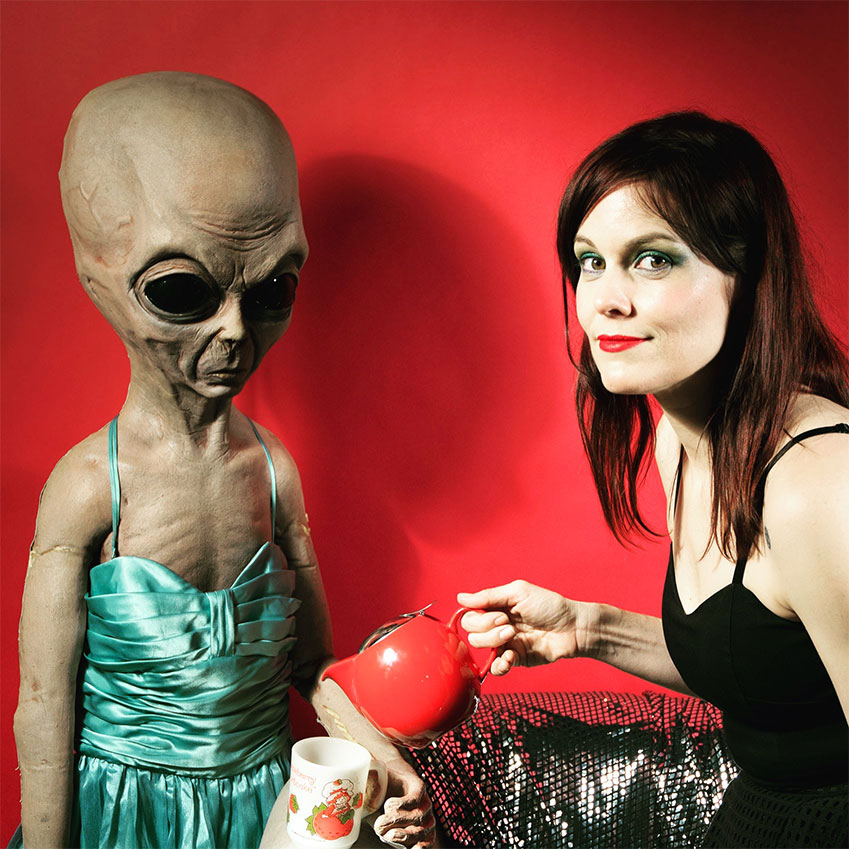

Melissa St Moore, is a singer, composer, writer, artist and web developer living in Chicago. She likes to incorporate symbolism and surrealism in her songs, but her self-titled debut explores real life themes.
She says in a recent interview by Venus Music News: "I spent a lot of younger years singing surrealist songs about imaginary worlds. With this debut album though I did a lot of reflection so a lot of the songs are about real worlds."
A self-taught dancer, conductor of her own train, and comedienne by circumstance, Melissa creates inner and outer worlds with her creative mix of sound and vision. Performing under the names Skates and M.Q., she has played many venues throughout LA and NYC, including a spot opening for Nina Hagen.
Melissa holds a BA from San Francisco State University and studied Film Music at UCLA with award winning composer, Elizabeth Myers, who advised her in the making of the album. Co-Producer and Engineer Jesse String (Leonard Cohen's Popular Problems) adds a catchy yet weird sensibility to the arrangements and Grammy nominated duo, The Ditty Bops, accent two tracks with atmospheric vocals and piano including on a spontaneous rendition of, "Take me Out to the Ball Game!" Her husband, Eric A. Harvey, lends a rock feel to many of the songs, with his high energy guitar playing and industrialized pedals. The album is perfect to play in your solar powered space cruise to Mars, or just play it in your car!
Melissa is currently working in web development. She plans to perform live shows as well as release new music every year. She can be found hanging out with her dogs, programming, watching Life Time Movies, observing strange patterns in nature and biking around.
INFO
Photo: Brandon Rizzuto